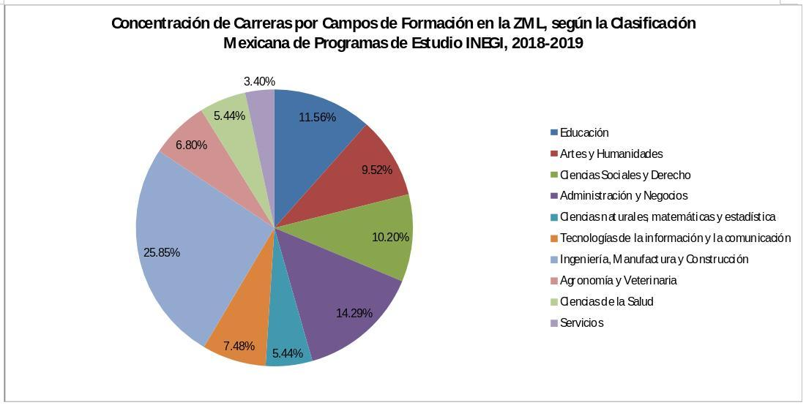
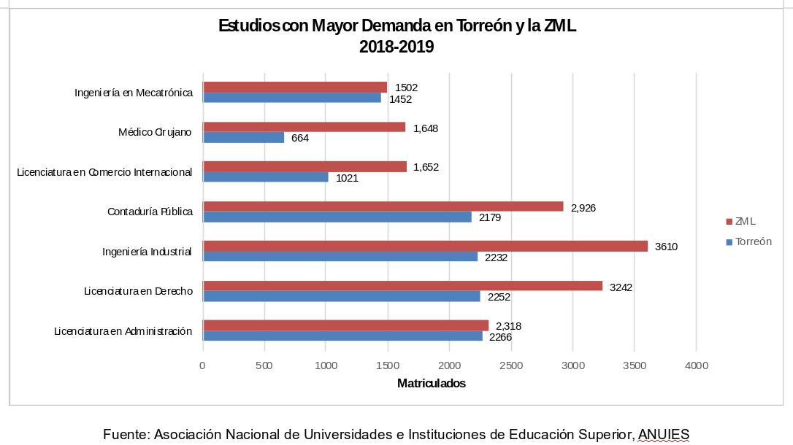

De acuerdo con la Clasificación Mexicana de Programas de Estudio por Campos de Formación Académica (CMPE 2016) que realiza el Instituto Nacional de Estadística y Geografía (INEGI), la cual agrupa los 5 niveles de estudios superiores en 10 campos de formación; los estudios ofertados en la Zona Metropolitana de La Laguna (ZML) para el ciclo escolar 2018 – 2019; se agrupan principalmente en el campo de Ingeniería, Manufactura y Construcción; con una representación del 25.85%. Los temas específicos que se abordan en esta división son manufacturas y procesos, Arquitectura y Construcción, Ingeniería mecánica, electrónica, eléctrica y profesiones afines.
Dichas actividades encuentran su alineación con la vocación económica de la ZML presentada en el Plan de Política Industrial desarrollado por el Instituto Municipal de Planeación y Competitividad de Torreón (IMPLAN). Ahí, se denota a la Industria Manufacturera como la principal actividad económica ya que contribuye con el 72% de la producción bruta, el 56% del valor agregado y el 28% del empleo. Dentro de esta Industria, de los 19 subsectores presentes en la ZML, existen 5 principales, ya que aportan el 83% de la producción buta, el 81% del valor agregado y el 68% del empleo. Dichos subsectores son: Metálicas Básicas, Industria Alimentaria, Fabricación de Maquinaria y Equipo, Fabricación de Equipo de Transporte y Fabricación de Prendas de Vestir; coformando del sector manufacturero el 83% de su producción buta, el 81% del valor agregado y el 68% del empleo.
Por otro lado, otros de los campos principales son el de Administración y Negocios, el cual contribuye con 14.29% sobre el total de las carreras, y que contempla los temas de Administración y Gestión, así como Negocios y Contabilidad; y el campo de Educación que agrupa el 11.56%. Éste último se incorporó al tercer pues to por importancia en representación porcentual, ya que el Ciclo escolar 2017-2018, dicho lugar era ocupado por el Campo de las Ciencias Sociales y Derecho.
 Fuente: Asociación Nacional De Universidades e Instituciones de Educación Superior, ANUIES; y Clasificación Mexicana de Programas de Estudio por Campos de Formación Académica, CMPE 2016.
Desde otra arista, la ZML, cuenta con 147 estudios diferentes a nivel superior, 8 más con respecto al ciclo escolar 2017-2018; lo cual se traduce en 48,803 matriculados en 47 ingenierías, 77 licenciaturas y 23 estudios técnicos; siendo los hombres poco más de la mitad de la matrícula con el 51%. Del total de matriculados en el ciclo escolar 2018-2019, 16 de cada 100 egresaron y 14 de 100 se titularon, uno más con respecto al año pasado. El mayor porcentaje de egresados y titulados también son hombres.
En la región lagunera, la carrera con mayor demanda es Ingeniería Industrial, seguida la Licenciatura en Derecho y Contador Público. A continuación se muestra una gráfica con las principales carreras para la ZML y Torreón, en función del número de matriculados.

Si analizáramos detalles para ingenierías, licenciaturas y estudios técnicos:
Las licenciaturas con mayor matrícula en la ZML son: Derecho, Contaduría Pública y Administración. Donde 6 de cada 10 matriculados son mujeres.
Las ingenierías con mayor matrícula en la ZML son: Industrial, Mecatrónica y Sistemas Computacionales. Donde 7 de cada 10 son hombres.
Los estudios técnicos con mayor matrícula en la ZML son: Técnico Superior Universitario en Procesos Industriales Área Manufactura, Técnico Superior Universitario en Mantenimiento Área Industrial y Técnico Superior Universitario en Mecatrónica Área Automatización. Donde 7 de cada 10 son hombres.
Las Instituciones que ofrecen estos estudios de educación superior en La Laguna son 62; la Universidad Autónoma de Coahuila, seguida del Instituto Tecnológico de la Laguna y el Instituto Tecnológico Superior de Lerdo; son las Instituciones públicas con mayor cantidad de alumnos matriculados en ese orden, y juntas agrupan el 39% de los estudiantes de educación superior de la región. En contraste, las principales instituciones privadas con mayor número de alumnos registrados son la Universidad Vizcaya de las Américas, la Universidad Iberoamericana Torreón y la Universidad La Salle; juntas agrupan el 8% de los alumnos de este nivel.
Si bien es importante que exista un equilibrio entre la oferta de profesionistas y la demanda de los mismos, tomando en cuenta aspectos técnicos; también es relevante dotar a los y las estudiantes de las herramientas para el desarrollo de habilidades blandas como el liderazgo o la facilidad para comunicarse. A la par, trabajar en la calidad de la vinculación academia - empresa, la profesionalización y certificación de la proveeduría, la infraestructura de hospedaje industrial, la capacitación y especialización de los colaboradores, y la atracción de inversiones, mismas que generarán mayor valor agregado y terminarán conservando en la región el talento de las y los jóvenes laguneros.
PUNTOS DE INFORMACIÓN
Los estudios ofertados en la ZML, para el ciclo escolar 2018 – 2019; se agrupan principalmente en el campo de Ingeniería, Manufactura y Construcción; con una representación del 25.85%. Los temas específicos que se abordan en esta división son manufacturas y procesos, Arquitectura y Construcción, Ingeniería mecánica, electrónica, eléctrica y profesiones afines.
La ZML, cuenta con 147 estudios diferentes a nivel superior, 8 más con respecto al ciclo escolar 2017-2018; lo cual, se traduce en 48,803 matriculados en 47 ingenierías, 77 licenciaturas y 23 estudios técnicos.
En la ZML, la carrera con mayor demanda es Ingeniería Industrial, seguida la licenciatura en Derecho y Contador Público.
Del total de matriculados en el ciclo escolar 2018-2019, 16 de cada 100 egresaron y 14 de 100 se titularon. El mayor porcentaje de egresados y titulados son hombres.
La Industria Manufacturera es la principal actividad económica ya que contribuye con el 72% de la producción bruta, el 56% del valor agregado y el 28% del empleo. Dentro de esta Industria, de los 19 subsectores presentes en la ZML, existen 5 principales, ya que aportan el 83% de la producción buta, el 81% del valor agregado y el 68% del empleo.
Las Instituciones que ofrecen estos estudios de educación superior en La Laguna son 62; la Universidad Autónoma de Coahuila, seguida del Instituto Tecnológico de la Laguna y el Instituto Tecnológico Superior de Lerdo; son las instituciones públicas con mayor cantidad de alumnos matriculados en ese orden.